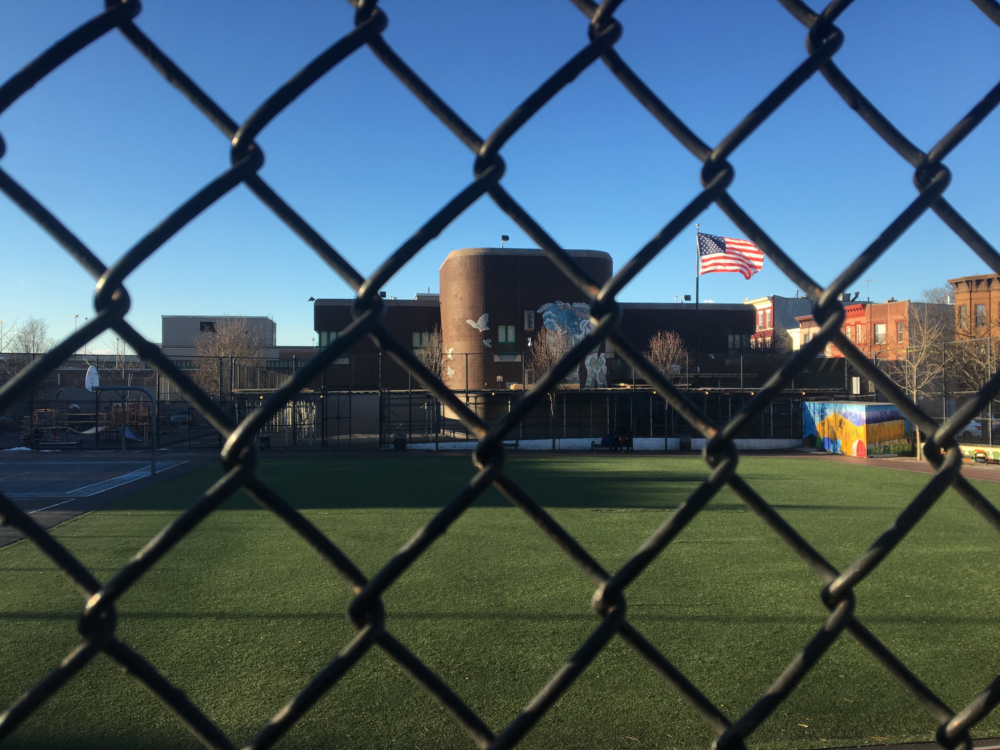
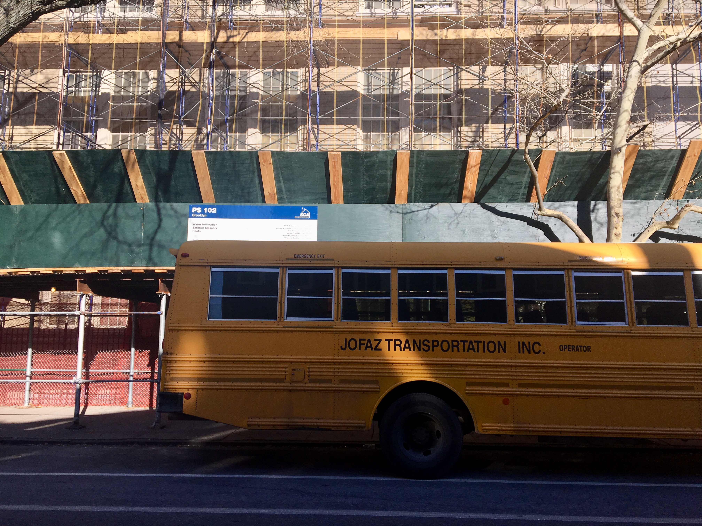

P.S. 503, in Sunset Park, is quiet and empty after school hours – but is at 151 percent capacity during the day. (Credit: Anya van Wagtendonk)
At P.S. 176, the Ovington School in Dyker Heights, lunch begins at 10 AM. Students attend Bay Ridge’s famed Fort Hamilton High School in shifts – three separate start and end bells. Down the road at P.S. 127, artificial walls divide the library and gym into makeshift classrooms.
New York City’s public schools are as crowded as its subways. More than 575,000 students attend schools that are past capacity, according to a September report by the advocacy group Class Size Matters, which lobbies for smaller class sizes. And data released in November by the Department of Education shows that School District 20 is the city’s most crowded. Public schools in this southern Brooklyn district, which encompasses Bay Ridge, Dyker Heights, Bath Beach, Bensonhurst, most of Borough Park and parts of Sunset Park, are at 189 percent capacity.
Robert Rossicone, an eighth-grade history teacher at P.S. 104 in Bay Ridge, has seen student ranks swell over his 17-year career. In his first year, he taught four classes with no more than 30 students each. Five years ago, his classes began holding as many as 40.
“It’s very difficult to address the needs of every student,” he said.
According to DOE research, 54 percent of New York elementary and middle school students in 2016 attended schools that exceed capacity – up from 28 percent just four years earlier. That spike began a decade old, said Leonie Haimson, executive director of Class Size Matters. She blames budget cuts and political apathy.
“The research is crystal clear that large class sizes [lead] to less learning, lower engagement, higher dropout rates, higher teacher turnover rates, and a range of other problems,” said Haimson.
Rossicone also experiences these challenges as a parent of two. His son, a third grader in an advanced course track at P.S. 102, has a sensory processing disorder.
“For him to concentrate in a room of 30 third graders is almost impossible,” said Rossicone. Because he and his wife, Courtney, are both educators, they know how to advocate for their son’s unique needs, he said, but other parents aren’t aware of the resources their kids might be missing out on.
Bob Lee, president of District 20’s Community Education Council, attributes overcrowding to a sharp uptick in new residents. Longtime New Yorkers, priced out of northern Brooklyn neighborhoods, have begun moving south, while immigrants are drawn to the area’s established Arab, Chinese, Latino and Russian communities.
Many are attracted to what remains a high performing school district despite the crowds, said Lee. District schools score highly on city-wide standardized tests and send hundreds of students to selective public high schools, like Brooklyn Tech and Stuyvesant.
That’s why Eugene Strupinsky, a member of the Community Education Council, and father of a second grader at P.S. 102 – which the Rossicone children attend – is not too concerned about overcrowding.
His daughter’s class generally has 30 or 31 kids in it, he said. “It’s crowded, it’s full, it might be at capacity, but we don't have trailers in the school yard.”
(P.S. 102 is at 137 percent capacity.)

P.S. 102 is shrouded in scaffolding as the city repairs pipes and an old roof. (Credit: Anya van Wagtendonk)
Parents should instead be concerned with schools being “underfunded and over-tested,” he said. “All the problems in schools can be fixed with money. … More teachers, nicer things, air conditioning, better food. It’s all just money.”
In Bay Ridge, new construction offers some hope. The future P.S./I.S. 746K is expected to open in 2019, and will hold 1000 elementary and high schoolers. An addition is underway at P.S. 187. Lee, the Community Education Council’s president, said his group actively seeks to build annexes on any school that can fit one.
Meanwhile, schools around the district are shrouded in scaffolding as workers repair worn out pipes, roofs, and floors. If trends hold, the school-aged population in District 20 will continue to rise, as it has in the last three Censuses. Students will continue to pack the rooms, halls and stairwells of these aging buildings.
For a time, the Rossicones considered moving upstate. They toured one school with a fourth grade class of just 19. It made Robert angry, seeing how his students must compete with others learning under better circumstances.
In the end, though, he and Courtney couldn’t leave. They love the diversity of their community, they said. And Robert remembers the dedication of his mother, who retired in 2007 after working as a teacher and administrator in District 20 for more than three decades.
“I’m sure there are professionals like that in every district, but this is home,” he said. “We all chose this profession because we enjoy working with kids, we want to make where we live a better place, we want to make a difference.”
“It just gets harder to do it when your hands keep getting tied,” he added.
About the Data: All crowding numbers refer to elementary/middle school capacity as of June 2017, collected from the Mayor's Office of Operations "Agency Performance Mapping Report". The author copied data individually into a table (accessible here; any errors during the transfer are the author's.
Map data was taken NYC Planning's Open Data. School district shapefiles acquired here. Descriptions of the neighborhoods encompassed in each district were taken from InsideSchools.org.